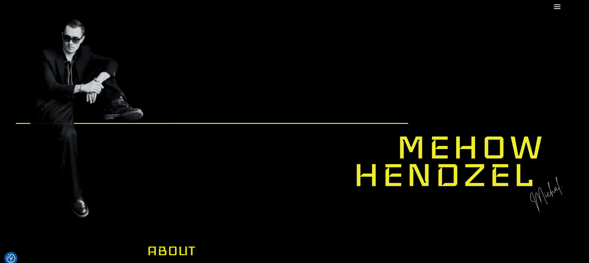
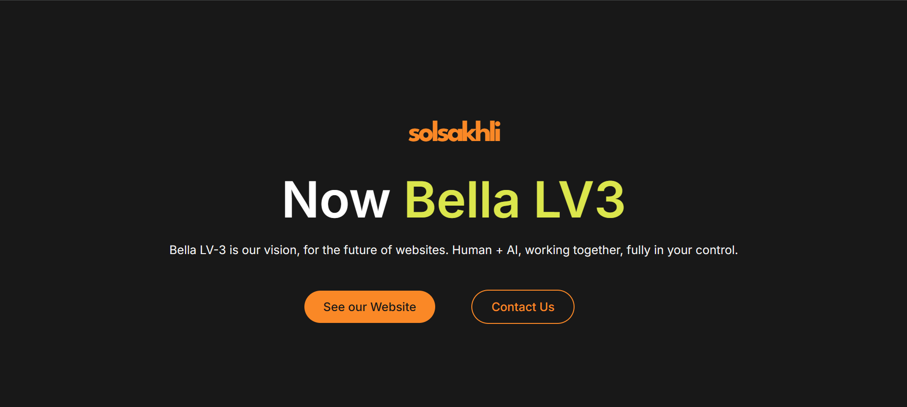
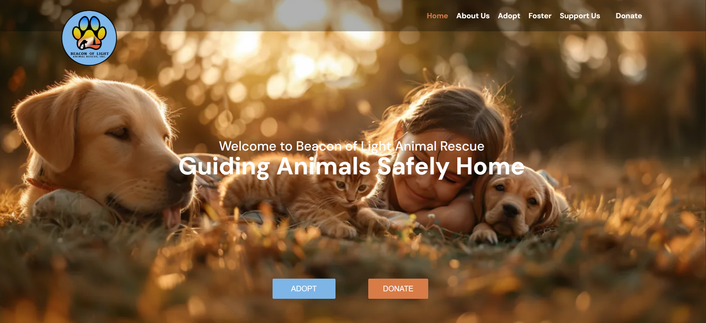

Portfolio / Resume
Rajat Verma
I build responsive, SEO-friendly WordPress websites with careful layouts, practical front-end code, and a polished visual rhythm that feels human and precise.
Current Role
WordPress Developer
Focus
UI + Performance
Style
Minimal, sharp, real
Availability
Open to workWhat I do
WordPress builds that stay clean, fast, and reliable.
What I value
Structure, readability, and quiet confidence.
Thanks for dropping by! I hope you enjoy exploring my work as much as I enjoyed building it.
About Me
WordPress developer focused on clean execution and modern UI flow.
I build responsive, SEO-optimized websites using WordPress, Divi, Elementor, HTML, CSS, and JavaScript. My work balances visual clarity with practical implementation.
I care about spacing, readability, and subtle interactions that make a site feel intentional instead of overproduced.
Languages
Frameworks & CMS
Tools & Strengths
Experience
Career timeline
WordPress Developer
SolSakhli · Remote
April 2025 – Present
- Developed and customized responsive, SEO-friendly websites using WordPress and Divi Theme Builder.
- Implemented pixel-perfect layouts from UI/UX designs with strong attention to responsiveness and user flow.
- Created custom forms, interactive UI components, and dynamic sections using HTML, CSS, and JavaScript.
- Improved loading speed and visual consistency across multiple pages to enhance overall user experience.
WordPress Developer Intern
SolSakhli · Remote
April 2025 – June 2025
- Assisted in creating and customizing WordPress websites using Divi Theme Builder.
- Implemented design updates, custom modules, and responsive improvements based on client needs.
B.Tech in CSE
Jawaharlal Institute of Technology, Borawan
2020 – 2024
CGPA: 7.73
Projects
Selected work

Personal WebsiteMehow Hendzel
WordPress, Divi
Designed and developed a responsive personal portfolio site using Divi.

Corporate WebsiteSolSakhli Company Website
WordPress, Divi, HTML, CSS, JavaScript
Built the official corporate website with custom UI features and polished branding.

Impact Sites Impact Sites
Impact Sites
Trugiving
WordPress, Divi
Donation / Fundraising Website ya Non-Profit Platform Website